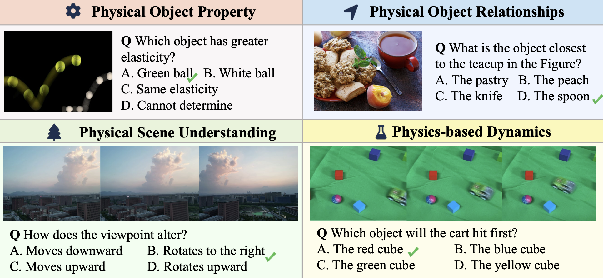
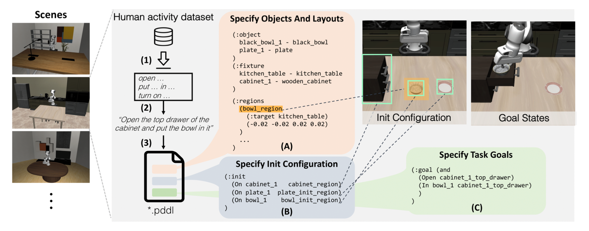
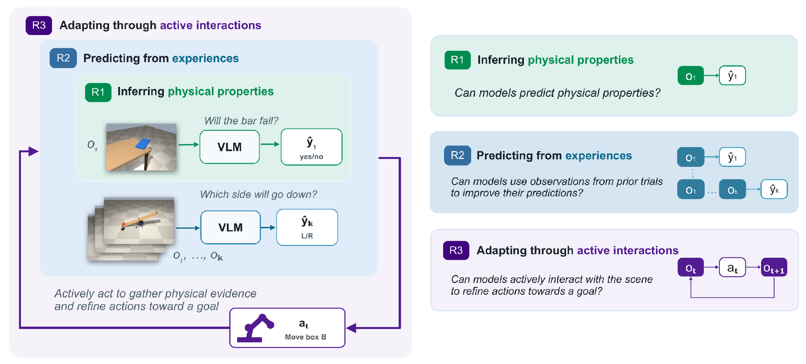
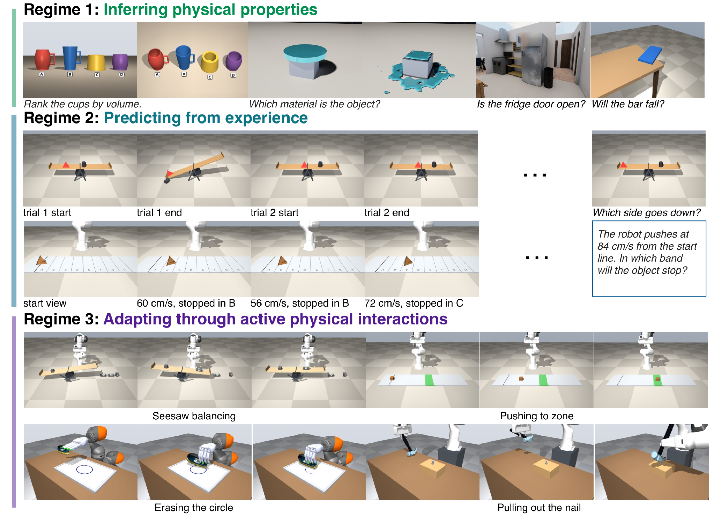
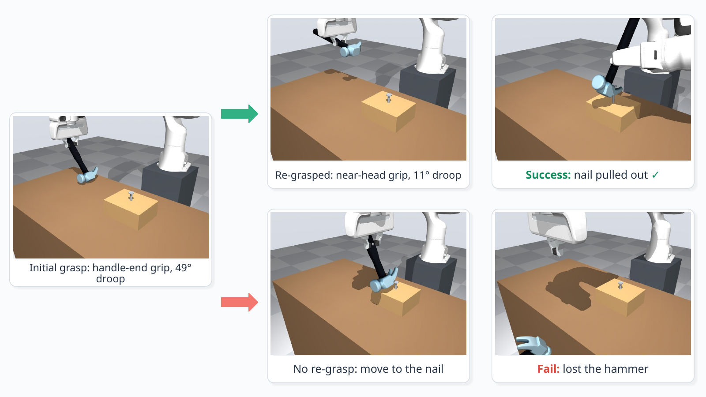

Abstract
Physical agents perceive the world through rendered observations and interact with environments through actions. However, evaluating physical reasoning requires more than generating realistic scenes. A graphics system must represent hidden physical properties, carefully control what information is visually available, and support interactions that reveal how these properties affect physical outcomes.
We present a graphics-based scene generation framework that systematically constructs interactive physical environments for evaluating perception, prediction, and action. Each scene is represented through its geometry, physical parameters, rendering configuration, and interaction interface. By controlling how observations are rendered and how agents interact with the scene, we encode three regimes of physical reasoning: (1) inferring physical properties from a single observation, (2) predicting from observations of prior trials, and (3) adapting through active interaction in a closed simulate–render loop. Under this formulation we generate APRO, an evaluation suite of 480 generated scenes across 11 tasks for testing embodied agents.
Motivation
Vision-language models are emerging both as high-level planners [1] and low-level executors [2] for robots, choosing and adjusting actions from visual feedback. Rendered images are the interface between physical simulation and agent decisions. Consider a robot whose hammer tilts after an initial grasp: the tilt reveals the mass distribution, and the robot can adjust its grasp before swinging. The tilt is a rendered consequence of hidden physical properties.
Problem. Agents see the world through rendered images, but what decides an action's outcome (mass, friction, stiffness) is hidden.
Gap. Physical reasoning datasets such as CLEVRER [3], Physion++ [4] and PhysBench [5] provide fixed images or videos outside the action–feedback loop, while manipulation benchmarks such as LIBERO [6] and RoboLab [7] render interactive scenes but only measure task success. Neither controls what the pixels reveal about the hidden physics, nor how that evidence grows through trials and interaction.
Our idea. Combine the two: generate a well-controlled graphics simulation dataset where agents are evaluated by interacting with it.


Technical Approach
We separate the hidden physical parameters, the graphics interface through which the agent observes and acts, and the rule that decides which renders it is given. Varying only the rule yields three regimes, so differences reflect the evidence, not the scenes.
Problem Formulation
A scene has state st and hidden physical parameters θ (geometry, mass distribution, friction, material). The agent interacts with the scene only through a graphics interface: it receives a question or goal q and observations ot = R(st; φ) rendered from the simulator, with appearance φ (textures, colors, lighting) sampled independently of θ. It may submit actions at that update the scene and return feedback zt+1, such as a settled angle or an execution error:
st+1 = F(st, at; θ), zt+1 = V(st, at, st+1)
The evaluator keeps θ and every st as privileged state for scoring, while an information-access rule decides which renders and feedback fields reach the agent. The three regimes are three settings of this rule.

R1Inferring physical properties
The agent sees o = R(s0; φ) (one or two views) and predicts ŷ = f(o, q). R1 asks only about properties visible in the image, such as height, shape, or state.
R2Predicting from experience
For scene i we render K earlier rollouts under other settings and reveal them progressively, ŷi(k) = f(oi, qi, ci(k)), k = 0, …, K, where ci(k) holds the first k trial renders. Each trial reveals part of θ but not the answer.
R3Adapting through active interactions
The agent picks at = π(q, ht) from its history ht of renders, actions and outcomes. The scene is simulated and re-rendered after every action, so each interaction advances the task and exposes hidden physics.
Data Generation
Each task generator samples θ and φ, builds the scene and renders it, controlling how θ is encoded in the image:
- the answer is determined by θ and read from the simulator;
- θ reaches the pixels only through the evidence the regime intends, never through φ;
- a scene is kept only if its simulated outcome matches the design.
Unless noted, tasks have 50 scenes, simulated in MuJoCo [8] and rendered with OpenGL.
R1Inferring physical properties
- Cup capacity: each cup or bowl is a solid of revolution. We sample an inner profile rin(z) and wall and base thickness, and revolve it into a closed mesh, plus a brim-full water mesh whose volume is the ground truth. Height, rim width and wall thickness are sampled to mislead.
- Material type: an object falls onto a narrow pedestal in Isaac Sim, simulated as a rigid body, FEM volume or surface (cloth) deformable, or PBD particles (liquid, paste, granular) rendered as an isosurface, path traced (RTX, 64 spp) at release and 1 s later. Only the deformation, not the texture, reveals the material.
- Visible state: in nine BEHAVIOR-1K houses [9] (OmniGibson), we set a fridge, cabinet, laptop or box joint to a fraction of its range; cameras are chosen by raycast visibility.
- Stability: uniform-density bars, mugs, mallets and pans rest over a table edge.
R2Predicting from experience
- Seesaw: two objects with procedural wood textures and masses sampled independently of size and look; we render the start and end frames of ten earlier runs from other positions.
- Plinko: random boards of tilted bars are searched until every entrance is robust to nudged drops yet lands away from the bin below; trial trajectories are projected through the camera and drawn on the render.
- Push prediction: eight shapes (including four Platonic solids) on a banded mat whose friction is tuned per scene by simulation, so equal push speeds stop in different bands.
R3Adapting through active interactions
The renderer runs inside the loop. In Seesaw balancing and Force push, a scripted Franka executes each requested placement or push with inverse kinematics, then the settled scene is re-rendered; we keep scenes where a solution exists and friction visibly matters. For Tool manipulation, we build ten scenes (hammer, stir, wipe, draw, erase, screw, …) from SimToolReal [10] tool meshes with per-part materials, for an iiwa arm with a Sharpa hand and a Franka, under joint-level and skill-level control (30 items). Ink, erasing and wiping are dynamic canvas textures: an amount map is painted or decayed under the tool's contact footprint and re-uploaded to the GPU each frame.
Preliminary Results
We have generators for all 11 tasks across three simulators (MuJoCo, Isaac Sim, OmniGibson). Scenes are sampled from θ, appearance is sampled independently, and answers are read from the simulator, so every image is a known encoding of known physics.

We tested the initial dataset with several VLMs. The experiments will expand, but they already show how agents use the rendered evidence from our closed simulate–render loop.

Progress & Updated Plan
Completed Done
- Formulation of the three evaluation regimes: hidden θ, rendering R(s; φ), and the information-access rule.
- Generators for all 11 tasks (MuJoCo, Isaac Sim, OmniGibson).
- 480 scenes with renders, rollout videos and full simulator state.
- Closed-loop interface for R3 (observe, act, re-render).
- Initial paper-style write-up, slides and video.
Remaining (Final, Dec 6) Planned
- More complex and diverse R3 tasks.
- Test VLMs: how the amount and kind of rendered evidence changes their behavior.
- Project webpage, 4–6 page paper and video.
Milestone Video
References
- [1] D. Driess et al. PaLM-E: An Embodied Multimodal Language Model. arXiv:2303.03378, 2023.
- [2] A. Brohan et al. RT-2: Vision-Language-Action Models Transfer Web Knowledge to Robotic Control. arXiv:2307.15818, 2023.
- [3] K. Yi et al. CLEVRER: CoLlision Events for Video REpresentation and Reasoning. ICLR, 2020.
- [4] H.-Y. Tung et al. Physion++: Evaluating Physical Scene Understanding that Requires Online Inference of Different Physical Properties. NeurIPS, 2023.
- [5] W. Chow et al. PhysBench: Benchmarking and Enhancing Vision-Language Models for Physical World Understanding. ICLR, 2025.
- [6] B. Liu et al. LIBERO: Benchmarking Knowledge Transfer for Lifelong Robot Learning. NeurIPS Datasets and Benchmarks Track, 2023.
- [7] J. X. Yang et al. RoboLab: A High-Fidelity Simulation Benchmark for Analysis of Task Generalist Policies. RSS, 2026.
- [8] E. Todorov, T. Erez, Y. Tassa. MuJoCo: A Physics Engine for Model-Based Control. IROS, 2012.
- [9] C. Li et al. BEHAVIOR-1K: A Human-Centered, Embodied AI Benchmark with 1,000 Everyday Activities and Realistic Simulation. arXiv:2403.09227, 2024.
- [10] K. Kedia et al. SimToolReal: An Object-Centric Policy for Zero-Shot Dexterous Tool Manipulation. arXiv:2602.16863, 2026.